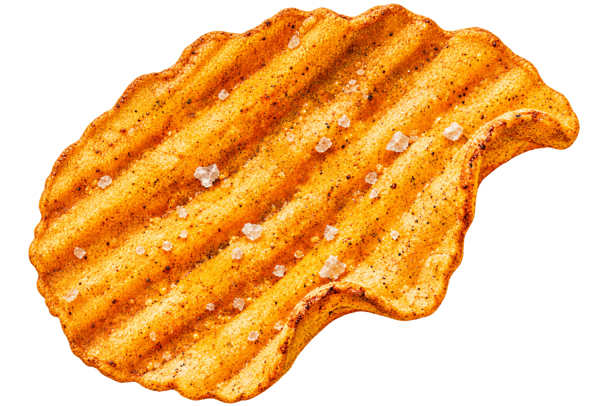
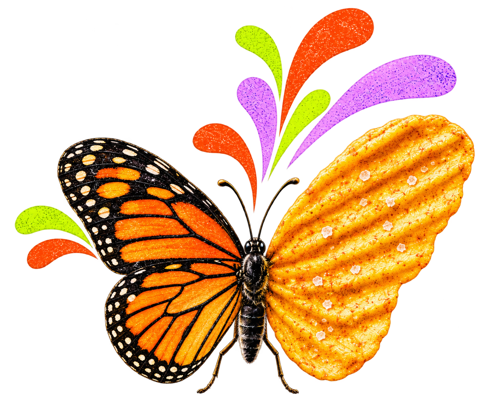

Entre el Fuego y la sal
El antojo toma vuelo

Estás frente al anaquel. Ves las papas de siempre, pero una bolsa de chile te llama la atención.
¿Ya se te antojaban unas papas picantes o se te antojaron al verlas?
En este recorrido vas a explorar qué sabores despiertan interés en México y seguir el vuelo de una mariposa monarca entre la sal y el chile. Tú decides dónde aterriza tu antojo.
La botana no es un producto
Es una conversación de millones.
Distribución de sentimiento
La longitud indica cuántas menciones hubo

Las de
SAL,
las que
PICAN
y todo lo que
CRUJE
en medio.

El antojo,año con año
Algunos sabores siguen dando de qué hablar, mientras otros van ganando terreno. Abre una bolsa y descubre cómo cambiaron las menciones de cada sabor entre 2024 y 2026.
Menciones estimadas por año
-
49.5K
Menciones estimadas de queso en 2025, su pico anual.
-
34.7K
Menciones estimadas de chile en 2025. El picor sigue siendo estructural.
-
10.6K
Menciones estimadas de Flamin’ Hot en 2026, casi duplicando 2024.
En conversación estimada, queso y chile son pilares consolidados. Sin embargo, Flamin’ Hot y Chamoy revelan una transición hacia sabores extremos, ácidos e hiperestimulantes.
¿Dónde aterriza
tu antojo?
Lo que ya se te antojaba
Al empezar este proyecto, quería saber qué sabores de papas daban más de qué hablar en México. Cuando llevé los datos al diseño, me quedé pensando en algo que me pasa frente al anaquel: a veces llego con un sabor en mente y una bolsa que me llama la atención me hace considerar otro. Por eso elegí a la monarca. Su vuelo me permitió representar ese cambio de rumbo, y el ala que se convierte en papa hace visible el momento en que el antojo aterriza. Las menciones me ayudaron a ver qué sabores aparecen en la conversación. Diseñar el recorrido me hizo entender que la forma de mostrar una opción también influye en lo que nos detenemos a mirar.
Lo que te llamó la atención
Entre lo que ya se te antojaba
y lo que te llamó la atención,
tu antojo puede cambiar de rumbo.
